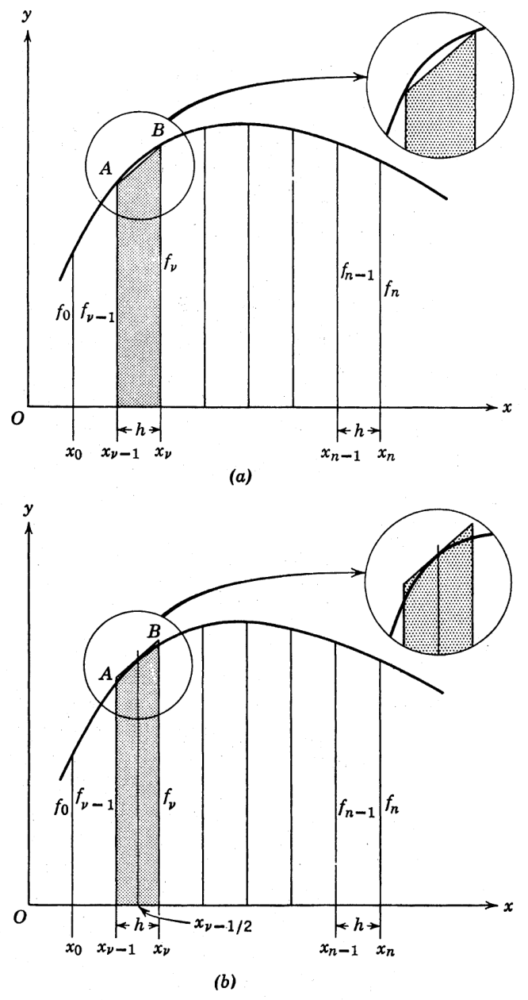
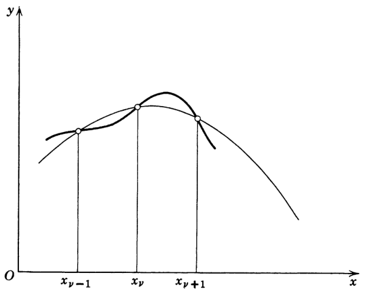

第二章的理论保证了（连续）函数的积分存在，但要把积分求出来，即所谓“求积”，¹ 只有在比较少见的情形下才可以借助初等函数办到。因此，我们必须设法用数值方法计算积分，并估计数值近似的精度。
原注 1（第 482 页） “求积”（quadrature）一词本有“化为正方形”的意思，即找一个面积相等的正方形，以此度量曲线所围的面积，正如“化圆为方”问题所说的那样。
要近似计算积分
J=∫abf(x)dx,(1)其中 a<b，我们用下列 n+1 个点把区间 a≤x≤b 分为 n 等份，每一份的长度为 h=(b−a)/n：
xν=a+νh,nh=b−a,ν=0,1,…,n.(2)于是
J=ν=1∑nJν,其中
Jν=∫xν−1xνf(x)dx.(3)整个面积 J 已经切成宽度为 h 的窄条，计算积分 J 的问题便归结为怎样准确地近似每条的面积 Jν。
a. 用矩形近似
直接按照积分原来的定义来近似，就得到
J=ν=1∑nJν≈h(f1+f2+⋯+fn),这里为了简便，记 fν=f(xν)。这里以及本章以下各处，符号 ≈ 都表示“近似等于”。
为了估计这种近似的精度或“误差”，设 f(x) 连续，并且在区间 a≤x≤b 上有一致有界的导数，即 ∣f′(x)∣≤M1。这时很容易证明（见第 507 页第 6.1 节习题 4）
∣Jν−hfν∣≤2M1h2,(4)从而
J−hν=1∑nfν≤n2M1h2=21M1(b−a)h.(5)因此，按第三章第 252 页的术语，用这个有限和近似积分，其误差与“网格宽度” h 同阶。
b. 更精细的近似。辛普森公式
几乎无需增加工作量，就可以用细长的梯形近似各条面积 Jν，如图 6.1(a) 所示。这比矩形近似更准确。相应的近似公式（梯形公式）为
J≈21h(f0+f1)+21h(f1+f2)+⋯+21h(fn−1+fn)=h(f1+f2+⋯+fn−1)+2h(f0+fn).(6)因为除首末两项外，每个函数值都出现两次。

图 6.1 (a) 梯形公式 (b) 切线公式
另一种近似通常比梯形公式还稍精确一些。仍用梯形来近似第 ν 个窄条，只是现在用曲线在区间 xν−1≤x≤xν 的中点 xν−1+h/2 处的切线作为梯形的上边。这个梯形的面积就是
hfν−1/2=hf(xν−1+2h).相加便得切线公式
J≈h(f1/2+f3/2+⋯+f(2n−1)/2).(7)我们将在第 486 页看到，若 f 的二阶导数在区间 a≤x≤b 上连续，且对某个常数上界 M2 有 ∣f′′(x)∣<M2，则这个近似的误差为 h2 阶。
最后，我们来谈著名的辛普森近似公式。如果 f 的四阶导数存在，并且在这个区间上一致有界，即对某个常数 M4 有
∣f(4)(x)∣≤M4,那么只需再多做一点工作，就能求得精确得多的近似值。当 n=2m 时，辛普森公式为
J≈34h(f1+f3+f5+⋯+f2m−1)+32h(f2+f4+f6+⋯+f2m−2)+3h(f0+f2m).(8)
图 6.2 辛普森公式
这个公式并不难得到。将第 ν 和第 ν+1 个窄条合在一起，用宽度为 2h 的窄条近似，其上边取一条抛物线，使它在三个横坐标 xν−1、xν=xν−1+h 和 xν+1=xν−1+2h 上都与 f 吻合（图 6.2）。牛顿插值公式（第 473 页）给出这条抛物线的方程
y=fν−1+(x−xν−1)hfν−fν−1+2(x−xν−1)(x−xν−1−h)h2fν+1−2fν+fν−1.因此
Jν+Jν+1≈∫xν−1xν+1ydx=∫xν−1xν−1+2hydx=2hfν−1+2h(fν−fν−1)+238h−2h(fν+1−2fν+fν−1)=3h(fν−1+4fν+fν+1).当 n=2m 为偶数时，将这些近似值对 ν=1,3,4,…,2m−1 相加，也就是把每一对窄条的面积加起来，便得到上述公式。
译者注 原书上一行把第三个下标印为 4。从“每一对窄条”可知，中点下标应依次为 1,3,5,…,2m−1。每对的权重是 1,4,1；相邻两对共用的端点被数两次，就产生了式 (8) 中的系数 2。
* 精度
估计这些近似的精度并不难。每个求积公式都是在一个区间上用容易积分的函数 ϕ(x)（一个多项式）来近似 f(x)。因此，估计 ∣f(x)−ϕ(x)∣ 就可以估计积分公式的误差。
在切线公式（第 483 页）中，对于区间 [xν−1,xν] 上的 f(x)，我们用它在中点 xν−h/2 处的切线来代替，也就是用
ϕ(x)=f(xν−2h)+(x−xν+2h)f′(xν−2h).由带拉格朗日型余项的泰勒定理，
f(x)=ϕ(x)+21(x−xν+2h)2f′′(ξ),其中 ξ 介于 x 与 xν−h/2 之间。因此，一个窄条所产生的误差满足
∣Jν−hfν−1/2∣=∫xν−1xν[f(x)−ϕ(x)]dx≤∫xν−1xν∣f(x)−ϕ(x)∣dx≤M2∫xν−hxν21(x−xν+2h)2dx=24h3M2.于是，把各小区间的误差合起来，¹ 得到切线公式总误差的一个上界
n24h3M2=24h2M2(b−a).原注 1（第 486 页） 这里算的是使用近似公式本身带来的总误差，即所谓截断误差。实际计算中，舍入还会引起额外误差。计算步数增加，即 h 减小时，舍入误差的总影响很可能增大，而截断误差却会减小。
可以仿照这个推导来估计其他求积公式的误差。梯形公式 (6) 在区间 [xν−1,xν] 上用一次插值多项式
ϕ(x)=fν−1+(x−xν−1)hfν−fν−1来近似 f(x)。在插值公式的余项估计中（第 475 页式 (40)）取 n=1，便得
f(x)−ϕ(x)=21(x−xν−1)(x−xν)f′′(ξ),其中 ξ 在 xν−1 与 xν 之间。因此，计算 Jν 所产生的误差，其绝对值至多为
M2∫xν−1xν21(x−xν−1)(x−xν)dx=12h3M2.总误差至多为这个量的 n 倍，即
12h2M2(b−a).同样的方法也可以用于辛普森公式 (8)。取 ϕ(x) 为在 xν−1,xν,xν+1 三点与 f 吻合的二次多项式，所得 Jν+Jν+1 的误差为 h4 阶。不过，这个误差估计还可提高一阶。为此改用一个三次多项式 ϕ(x)，它在区间 [xν−1,xν+1] 上比上述二次多项式更接近 f，两者的积分却相同，因而给出的仍是计算 J 的同一个近似公式。只须选取这样的插值多项式：它在 xν−1,xν,xν+1 三点与 f(x) 相等，而且 ϕ′(xν)=f′(xν)。这个多项式的形式为
ϕ(x)=A0+A1(x−xν−1)+A2(x−xν−1)(x−xν)+A3(x−xν−1)(x−xν)(x−xν+1).前三项就是在上述三点与 f 吻合的二次插值多项式，常数 A3 则由条件 ϕ′(xν)=f′(xν) 确定。末项
A3(x−xν+h)(x−xν)(x−xν−h)=A3[(x−xν)2−h2][x−xν]显然是 x−xν 的奇函数，因此它从 xν−h 到 xν+h 的积分为零。至于逼近 f 的误差，有下式（参看第 475 页式 (40)，其中取 n=3，并让两个插值点重合于 xν）：
f−ϕ=4!1(x−xν−1)(x−xν)2(x−xν+1)f(4)(ξ).这就给出计算 Jν+Jν+1 的误差上界
90h5M4,从而总误差的上界为
2n90h5M4=180h4(b−a)M4.自然，在每个窄条内用次数更高的多项式逼近 f(x)，还可进一步提高精度。
译者注 原书第 487 页称所得公式为 (9)，按本节编号应为 (8)。三次项在每对小区间内的积分为零，说明即使被积函数恰是三次多项式，辛普森公式也仍然精确。这就是误差估计可以多提高一阶的原因。
例
用上述各法计算
loge2=∫12xdx.把区间 1≤x≤2 十等分，每段长 h=101。用梯形公式 (6) 得
| 横坐标 |
函数值或加权值 |
| x1=1.1 |
f1=0.90909 |
| x2=1.2 |
f2=0.83333 |
| x3=1.3 |
f3=0.76923 |
| x4=1.4 |
f4=0.71429 |
| x5=1.5 |
f5=0.66667 |
| x6=1.6 |
f6=0.62500 |
| x7=1.7 |
f7=0.58824 |
| x8=1.8 |
f8=0.55556 |
| x9=1.9 |
f9=0.52632 |
| 小计 |
6.18773 |
| x0=1.0 |
21f0=0.5 |
| x10=2.0 |
21f10=0.25 |
| 乘以步长 |
6.93773⋅101 |
于是 loge2≈0.69377。因为被积函数的图像凸向 x 轴，弦位于曲线上方，所以这个值偏大。
用切线公式 (7) 则有
| 中点 |
函数值 |
| x0+21h=1.05 |
f1/2=0.95238 |
| x1+21h=1.15 |
f3/2=0.86957 |
| x2+21h=1.25 |
f5/2=0.80000 |
| x3+21h=1.35 |
f7/2=0.74074 |
| x4+21h=1.45 |
f9/2=0.68966 |
| x5+21h=1.55 |
f11/2=0.64516 |
| x6+21h=1.65 |
f13/2=0.60606 |
| x7+21h=1.75 |
f15/2=0.57143 |
| x8+21h=1.85 |
f17/2=0.54054 |
| x9+21h=1.95 |
f19/2=0.51282 |
| 乘以步长 |
6.92836⋅101 |
于是 loge2≈0.69284。由于曲线的凸性，这个值偏小。
保持同样的分割，改用辛普森公式 (8) 就能得到精确得多的结果。计算如下。
| 横坐标 |
函数值及加权计算 |
| x1=1.1 |
f1=0.90909 |
| x3=1.3 |
f3=0.76923 |
| x5=1.5 |
f5=0.66667 |
| x7=1.7 |
f7=0.58824 |
| x9=1.9 |
f9=0.52632 |
| 奇数下标小计并加权 |
3.45955⋅4=13.83820 |
| x2=1.2 |
f2=0.83333 |
| x4=1.4 |
f4=0.71429 |
| x6=1.6 |
f6=0.62500 |
| x8=1.8 |
f8=0.55556 |
| 偶数下标内点小计并加权 |
2.72818⋅2=5.45636 |
| 加入奇数下标各项 |
13.83820 |
| x0=1.0 |
f0=1.0 |
| x10=2.0 |
f10=0.5 |
| 总计乘以 h/3 |
20.79456⋅301 |
所得 loge2≈0.69315。实际值为 loge2=0.693147…。